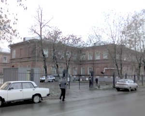
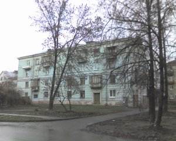
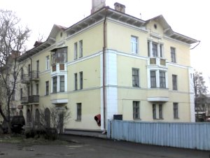
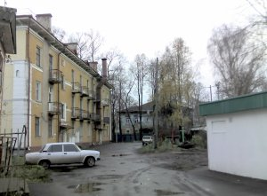
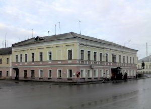
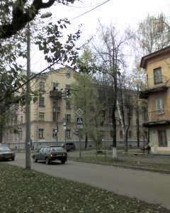
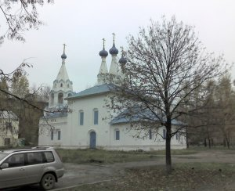
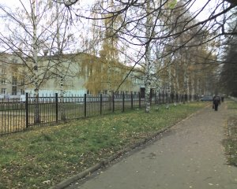
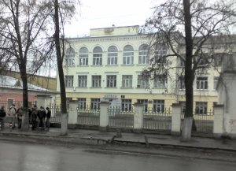
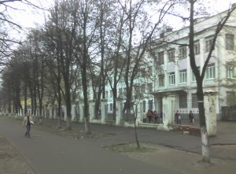

|
Игорь Тальков.
Этот раздел сайта не предназначен для широкого круга читателей. Разве что родные и друзья найдут здесь что-то интересное, поскольку это рассказ о местах, связанных с ярославской частью моей биографии.

Это кирпичное здание дореволюционной постройки - больница имени Семашко в Красноперекопском районе. Здесь 26 апреля 1967 года, около 6 часов вечера я родился. Вес мой составил 5 килограмм (да, да, “Бедная мама!” - стандартная фраза, произносимая дамами в этом месте рассказа). При рождении я громко и долго кричал.

В этот дом на улице Чайковского маму и меня привезли из роддома. Наша семья занимала комнату в коммунальной квартире. С этим жильем связаны мои первые детские воспоминания. Помню соседей. Тетю Тоню (угощала пряниками, произнося при этом странную фразу: “Кушай на здоровье, бабушка коровья”) и дядю Аркашу (славился умением хорошо играть на аккордеоне, который в день похорон этого доброго старика поставили в изголовье гроба).

Моя бабушка по отцовской линии - Елизавета Николаевна - работала простой уборщицей в магазине. При этом, как ни парадоксально, она обладала недюжинным риэлторским талантом. В результате серии ее немыслимых комбинаций, наша семья получила трехкомнатную отдельную квартиру вот в этом доме на Московском проспекте. Квартира размещалась (да и теперь, конечно, никуда не делась) на втором этаже и имела необычную форму - обладала эркером, то есть выступом.
Когда осенью 2007 года я делал эти снимки, то заметил, что многие вещи за 35 лет (мне было лет 5, когда мы туда переехали), не изменились. Например, в ту пору в этом доме размещалось кафе “Огонек”. Теперь это заведение называется просто “Столовая”, но по-прежнему работает (вывеску можно разглядеть в левой части верхнего снимка). Все так же двор от Московского проспекта отделяет синий деревянный сплошной забор.

Во дворе тоже почти без перемен, хотя похоже, что как раз накануне моего визита в нем начались какие-то строительные работы. Всё так же торчит труба котельной (в доме не было центрального отопления и горячей воды, ее грели в титанах - круглых чугунных печках). Такое ощущение, что даже песочницу, в которой мы с другом Валеркой строили замки и закапывали “секретики” из бутылочного стекла сравныли с землей лишь на днях.
В первозданном виде сохранилась и решетка нашего балкона на втором этаже. Между ее прутьев когда-то застряла моя дошкольная голова. В конце двора чернеет забор, под которым я тоже умудрился застрясть, поскольку перелезть через него, как большие мальчишки, не мог, а увязаться с ними на запретную территорию соседнего детского садика очень хотелось.

А это - продовольственный магазин, куда мама отправляла меня шестилетнего за разливным молоком и другими продуктами. Он работает с незапамятных времен (думаю, еще с купеческих) до сих пор. С ним у меня ассоциируется такое словосочетание, как “талоны на сливочное масло”. С качественным хавчиком в СССР всегда была напряженка.

К сожалению, мои родители развелись, разменяв это прекрасное жилье в пяти минутах езды от исторического центра города. Мама, только что родившийся брат Сергей и я переехали в пятнадцатиметровую комнату в коммунальной квартире вот в этом доме на углу улиц Рыбинской и Мышкинской (ныне - Лисицына). Папа с бабушкой получили жилье отдельное, но несравнимое по качеству с квартирой на Московском - хрущевку на Пятерке, в районе, считавшемся почти окраиной. И если мама осталась с двумя малолетними детьми на руках, то отцу выпали хлопоты по уходу за совсем старенькой парализованой бабушкой (моей прабабушкой), а позднее - и за Елизоветой Николаевной.
Наш бывший балкон - на 4-м этаже, его скрывает листва. Зато окно и балкон соседей по коммуналке (от дерева к углу дома, за исключением крайнего) видны на снимке хорошо. Соседи были необычными. Желтое трехэтажное здание, угол которого виден на переднем плане справа, принадлежит предприятию Общества слепых. Район, в котором мы оказались, был заселен в немалой степени незрячими и плоховидящими людьми. Таковыми были и наши соседи - прекрасные, спокойные люди, знавшие цену взаимопомощи и хорошим человеческим отношениям. Вместо чтения книг они скрашивали досуг за прослушиванием магнитофонных записей с начитанными текстами (теперь это называется аудиокнигами). Журналы же, которые они выписывали, были толщиной с том энциклопедии, поскольку были набраны азбукой Брайля.

В минуте ходьбы от нашего дома располагалась автобаза, организованная на территории, принадлежавшей некогда церкви. После Перестройки предприятие расформировали, а памятник архиректуры отреставрировали. В детстве я и не подозревал, что живу рядом с историческим местом (о церквушке на Городском Валу и связанных с ней событиях я написал в другом материале).

Моя мама не была оригинальна в своих педагогических устремлениях. Ей очень хотелось, чтобы сын стал образованным, попал в “хорошее общество” и т.п. Поэтому когда мне пришла пора идти в первый класс, она приложила много усилий к тому, чтобы меня приняли в школу №42 с углубленным изучением французского языка. Не получилось. Пришлось идти в первый класс по месту жительства, в обычную школу №1, которая только что открылась в новом здании. Маму пугало то, что там еще не было сложившегося педагогического коллектива, устоявшейся репутации.
Страхи по поводу плохого качества обучения в школе №1 были преувеличены. Моими однокласниками были дети начальников и специалистов одного из крупнейших ярославских заводов - ЯМЗ. Раз уж их родители (только что получившие новые квартиры в новостройках соседнего микрорайона) не побоялись отдать детей в такое учебное заведение, значит всё было не так уж плохо. А сегодня школа №1 и вовсе считается одной из самых благополучных в Ярославле.
А вот с первой учительницей нам действительно не повезло. К работе она относилась спустя рукава и детей вряд ли искренне любила. Зато с учительницей, на которую, по требованию родителей, ее заменили спустя несколько месяцев, повезло сказочно. Лидия Леонидовна Галиуллина - герой войны, бывшая летчица легендарной женской эскадрильи ночных бомбардировщиков. Но главное, конечно же, не это. Педагогом она была отличным (Заслуженый учитель РСФСР), мы ее очень любили. На доме, в котором она жила, теперь мемориальная доска.
Когда я закончил 4 класса, мама нашла-таки возможность осуществить свою мечту об обучении старшего сына в какой-нибудь элитной школе, договорившись о моем переводе в школу с математическим уклоном №33. Ну, с математическим, так с математическим, благо склонностю к точным наукам природа нас не обделила.

Хоть и было это сделано не по моему желанию, маме нужно, конечно же, сказать спасибо. В 33-й школе не только занимались с детьми математикой сильнейшие в городе специалисты, но и предлагалось много факультативных занятий. Например, можно было посещать филиал Заочной школы программирования, базировавшейся при Новосибирском отделении АН (это 1979-80 гг.!). Школьники чуть ли не в обязательном порядке выписывали журнал “Квант”, и хотя я в нем в свои 11-12 лет почти ничего не понимал, но некоторые знания, которые не почерпнешь в обычной школе, в голове, конечно же, откладывались. Например, репродукции картин Эшера, несложные, но эффектные физические опыты, которые легко можно было повторить в домашних условиях, ну и, конечно, уроки “Заочной школы программирования”, домашние задания к которым мы с одноклассниками решали в отдельных тетрадках и отравляли почтой в Новосибирск.
Самым же важным внеурочным источником знаний для меня стал не школьный факультатив, а Астрономический кружок Татьяны Лаврентьевны Коровкиной при Станции юных техников. Это отдельная вселенная, повлиявшая на формирование моего ума больше, чем многие школьные преподаватели. А посему рассказ об астрономическом кружке я допишу в следующий раз, так как только что обнаружилось, что не догадался сфотографировать ни здание, в котором он размещался, ни обсерваторию, ни некоторые другие объекты, имеющие отношение к этой одной из самых светлых страниц моего школьного детства.

Когда я закончил 6-й класс, подошло время идти в школу моему брату Сергею. У мамы в очередной раз возникло желание пристроить на этот раз уже его в какую-нибудь особенно “приличную” школу. Выбор пал на 49-ю, действительно славившуюся успехами в наших окресностях. Там отказали, мотивировав тем, что территориально мы прикреплены всё к той же школе №1. Реализации маминых устремлений помогло то, что в этой школе из двух слишком многочисленных шестых классов в тот момент формировалось три седьмых. На этот дополнительный класс детей не хватало и Сергея готовы были принять, если я перейду к ним из 33-й.
У этого варианта были очевидные плюсы: во-первых, мы с братом оказывались в одной школе, что для него, как для первоклассника, было важно. Во-вторых, 33-я школа хоть и была элитной, но добираться туда нужно было минут 20 на всегда переполненном троллейбусе. В-третьих, по уровню преподавания 49-я не уступала 33-й (за исключением углубленного преподавания математики), так что 7-й класс я снова начал в новом для себя окружении.
Новые знакомства пошли на пользу. Шел 80-81-й учебный год - время повального увлечения магнитофонными записями песен Высоцкого, “мелодий и ритмов зарубежной эстрады” и сопутствующих занятий радиоэлектроникой. С моим новым школьным другом Мишкой Яковлевым мы самозабвенно паяли печатные платы, разыскивали по магазинам (а иногда и свалкам) дефицитные детали для звуковоспроизводящих устройств и цветомузык, обменивались магнитофонными записями, коллекционировали вырезки из газет и журналов о полузапретной в ту пору “рок-музыке” и даже сквозь шум глушилок слушали по ночам Севу Новгородцева по BBC.
В целом жизнь в 49-й школе была не менее насыщеной, чем в 33-й. К тому же возраст был уже такой, что предполагал школьные вечера и огоньки, походы с рюкзаками и палатками, летние трудовые лагеря и все прочее, что полагалось советским 13-15-летним подросткам. Я продолжал ходить в астрономический кружок и, если честно, не думаю, что много потерял, не оставшись в математической спецшколе.
Не остался я,впрочем, и в 49-й, отучившись в ней лишь 7 и 8 классы. Следующий крутой вираж в своей биографии я сделал уже самостоятельно, без мамы. Связан он был с тем, что жили мы в обстоятельствах довольно стесненных: мать с двумя подрастающими сыновьями в коммуналке. Вечная нехватка денег, да еще в условиях перманентного советского дефицита… Отец со временем начал неплохо зарабатывать и исправно платил приличные алименты. И все-таки будущее настораживало. Мысль о том, что я закончу школу, поступлю в институт и отучусь там 5 лет в голове не укладывалась. И дело не в том, что не смогу поступить. Учился я без троек, а такой коррупции в системе высшего образования, когда поступить можно только по блату или за деньги, в советское время не было. Вопрос заключался в другом: на какие средства жить все эти институтские годы?
Я принял решение после 8-го класса идти в техникум. Мама была в шоке: аттестат без троек позволял безбедно закончить 10 классов и открывал перспективу поступления в вуз. Одноклассники и учителя тоже недоумевали. Но я настоял на своем. Поначалу хотел пойти в Железнодорожный техникум на отделение автоматики и телемеханики (развить свое увлечение радиоэлектроникой). Туда не взяли по здоровью (у меня врожденный порок сердца). От поступления в Химико-механический отговорила мама: ездить далеко. А вот вариант с Автомеханическим техникумом устроил всех: и от дома близко, и отделение автоматизации есть. Взяли меня без экзаменов (выручил аттестат без троек). Немаловажным аргументом в пользу поступления в техникум было и то, что там платили степендию - для нашего бюджета прибавка хоть и скромная, а не лишняя.
Так закончилось моё школьное детство.
Написано в 2009 г.